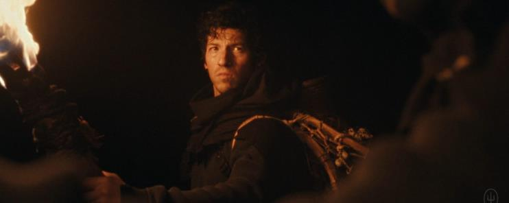
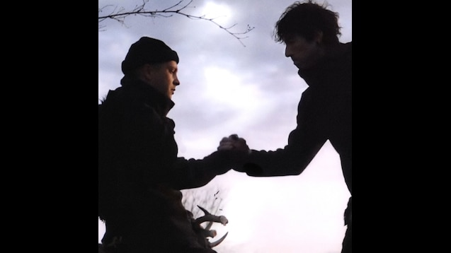
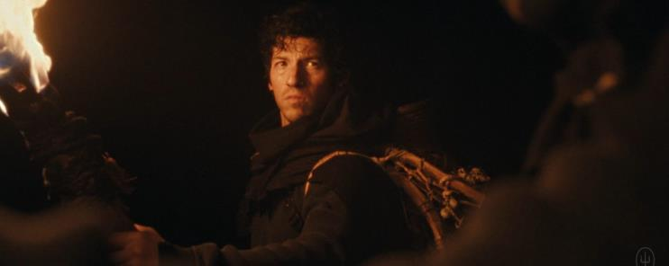
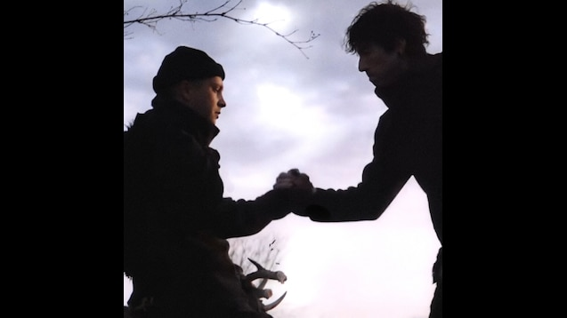
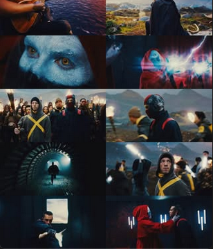
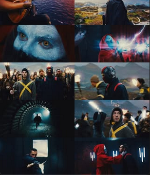

Cada album representa una Era que cuenta una historia.
Eras
Álbumes
Narrativa de Twenty One Pilots a traves de los albumes.
Era Twenty One Pilots y Vessel 2009 - 2015
La narrativa de Twenty One Pilots comienza en sus primeros trabajos, como el álbum Twenty One Pilots y el eliminado Regional at Best, que ya se comenzaba a ver una exploración profunda de temas personales. Sin embargo, fue en Vessel cuando la banda comenzó a hacer conexiones claras sobre las luchas internas, la salud mental y la identidad que se encuentra en la canción "Car Radio”. Esta canción representa un momento crucial para Tyler Joseph, donde describe estar atrapado en su propia mente, lidiando con pensamientos que no puede evitar, simbolizados por el silencio de la radio de su auto que fue robada. Esto refleja la sensación de estar constantemente rodeado de pensamientos inquietantes, de no poder escapar de su mente. Es una de las canciones más representativas de la lucha interna que se convertiría en el tema central de muchas de sus canciones posteriores.


En esta etapa, el personaje principal de la narrativa aún no tiene una identidad completamente definida, pero está claro que se enfrenta a un conflicto interno profundo. La sensación de estar atrapado en un ciclo de pensamientos oscuros, sin poder encontrar un escape o una salida, comienza a tomar forma en sus letras.
Aunque todavía no se menciona a Blurryface ni a Dema, ya se perciben las primeras manifestaciones de un antagonista interno: la ansiedad, el miedo y la autocrítica. Estas emociones son personificadas de manera abstracta, lo que más tarde evolucionará en la figura de Blurryface. En este punto, la narrativa aún es introspectiva y no se han introducido elementos explícitos de la mitología de la banda.
Era Blurryface 2015 - 2018
En mayo de 2015 Twenty One Pilots saca el álbum Blurryface. En este, Tyler busca representar y personificar todos sus miedos e inseguridades a través de un personaje llamado Blurryface. Blurryface en las canciones se presenta con una voz grave y los ojos rojos.

Una particularidad de Blurryface es que está dividido en 9 círculos dónde cada círculo corresponde a una canción del mismo álbum y a su vez cada uno de ellos representa un miedo o inseguridad distinta. En esta era Tyler se pinta el cuello y las manos de negro como representación a sus inseguridades.
En el video de Heavydirtysoul se ve a Tyler dentro de un auto manejado por Blurryface, durante la canción el auto se va rompiendo hasta finalmente prenderse fuego, pero una vez que la canción termina se muestra la primera escena del video donde Tyler está sentado en el auto, recalcando la teoría de que todo es un ciclo y también demostrando que Blurryface no es una persona en el plano físico si no en el plano mental de Tyler.

En 2018, mediante acertijos y paginas webs, los fans encontraron un mapa de dema, cartas de Clancy, fotos y videos. En las cartas Clancy explica que esta en Dema, una ciudad controlada por nueve obispos que la habitan, conocidos como “Nico and the niners”, ellos predican una religión llamada Vialismo. También explica como con el tiempo se ha dado cuenta que mantenerse en ese lugar solo lo va a llevar a sentirse cada día peor así que decide escapar de ahí.

Era Trench 2018 - 2020
El 11 de julio sale el vídeo de Jumpsuit, a las dos semanas el vídeo de Nico and the niners y dos semanas después el de Levitate. Estos tres videos mencionados están conectados y conforman la trilogía de los videos de Trench, los cuales nos muestran la vida en Trench, Dema y a Tyler en su lucha por entrar y salir de esos lugares.
En Jumpsuit es donde veamos a Tyler y Josh por primera vez después de un año, al comienzo del video Tyler dice: hemos estado aquí todo el tiempo, estas dormido, ya es hora de despertar, dándonos a entender de que los que estábamos dormidos y no sabíamos nada éramos nosotros pero que él durante todo ese año ya estaba en Trench y Dema. Con ver el comienzo de Jumpsuit notamos que el vídeo de Heavydirtysoul se conecta con este, ya que hay un auto quemado en el medio de la calle tal como lo dejaron en el vídeo de Heavydirtysoul.

En el video de Jumpsuit vemos a Tyler caminar por las montañas de Trench intentando llegar al campamento de los Banditos, pero en un momento vemos cómo un obispo se le acerca, toca un poco su cuello y lo pinta de negro, dando a entender que estos quieren volver a controlar su vida, haciendo que Tyler lo siga de vuelta a Dema. Los Banditos ven está situación y deciden tirarle pétalos amarillos como señal de guía y demostración de que puede salir de ahí, es así como Tyler sale del control del obispo y empieza a correr lejos de éste.
Posteriormente, en el video de Nico and the niners vemos que Tyler no pudo llegar al campamento de los Banditos y está de vuelta en Dema, pero con ganas de intentar de nuevo salir de allí. Cuando abre un cajón para guardar una flor vemos que ya hay otras ocho, estás flores representan la cantidad de veces que Tyler intento salir de Dema, pero no lo logro, cada flor es un intento fallido y esta sería su novena vez intentando salir. Los Banditos como vieron que después de todo lo que pasó en Jumpsuit Tyler no llego al campamento deciden salir a buscarlo, luego Tyler se encuentra con los Banditos, pero si bien al principio intenta escapar de ellos al final decide quedarse y empiezan a tocar la canción, los obispos escuchan el ruido por lo cual se dirigen allí, pero para el momento en el que ellos llegan, los Banditos ya se habían ido y solo dejaron un par de cosas como la batería de Josh y la campera de Tyler con las cintas amarillas. Esta vez Tyler sale acompañado y no solo. Los Banditos deciden ponerle cinta amarilla para que ahora sea más difícil que los obispos lo encuentren.
Más adelante, en Levitate vemos cómo Tyler por fin sale de Dema y llega con ayuda de los banditos al campamento ubicado en Trench, ahí Tyler se rapa el pelo para sentirse más seguro consigo mismo y como acto de rebeldía. Luego vemos que todos están festejando y pasándola bien. Llegando al final del video Tyler está sentado con otros Banditos, pero en un momento inesperado un obispo lo agarra del cuello y lo vuelve a llevar a Dema.
Era Scaled And Icy 2021 - 2023
En abril de 2021, todo el material que estaba en el sitio web donde estaban subidas las cartas de Clancy, los mapas de Dema y los otros archivos que subieron en 2018, se borraron y en su lugar apareció un mensaje de parte del municipio de Dema explicando que todo lo subido a ese sitio web violaba la ley de Dema, así que ellos tomaron acción en el tema. Esta es la razón por la cual Clancy ahora estaba muerto, los obispos encontraron el sitio web en donde él contaba todo y tomaron acción en la situación.
Algunas palabras de ese mensaje se podían cliquear y te llevaban a otras páginas en donde en una de ellas aparecían un poster en donde se informaba el nombre del nuevo álbum y un Livestream show. Todo eso estaba producido por Dema. El álbum de esta era es Scaled And Icy (que es un anagrama de Clancy is dead), el cual se publicaria el 21 de mayo de 2021.

Despues de Levitate se sabía de que a Tyler un obispo lo había atrapado y lo había llevado de vuelta a Dema, pero, Josh aparecía en el álbum producido por Dema aunque el era el líder de los Banditos. Una teoría explica que la única forma de destruir a Dema es desde adentro, entonces Josh se infiltró en Dema para salvar a Tyler y terminar de una vez con las corruptas y dañinas políticas de Dema.
En el video de Saturday Tyler y Josh están dando una performance desde un submarino manejado por obispos de Dema, hasta que una criatura (Trash, un dragón) rompe un vidrio y el submarino se empieza a hundir. Es así como Tyler y Josh escapan, pero otras personas, incluidos obispos, mueren. Al principio se creyó que Trash había ayudado a los chicos a escapar, pero luego se conoceria en nuevas cartas de Clancy que era totalmente descartado ya que en ellas él nos cuenta que en realidad esa performance era parte de un show organizado por los obispos en la Asamblea Anual de los Glorificados en donde se invitó a Tyler y a Josh para dar una performance desde ese submarino, y en realidad, los obispos del submarino eran actores.
En el video de The Outside lo primero que vemos es que Keons poseyó a Trash, usando unos cuernos de Ned, para que este rompa los vidrios del submarino y los chicos pudieran escapar hacia la isla Voldsøy para reencontrarse con Ned y que este los ayude, Keons está del lado de los Banditos y los obispos al darse cuenta de la traición deciden asesinar a Keons. Josh y Tyler llegan a la isla y entre las plantas se logra ver algunas apariciones de Ned, el cual los guía hacia una cueva donde hay más de él, en la cueva, Tyler y los Neds toman una bebida la cual se puede deducir que es cloro ya que los cuernos de Ned crecen, y cuando llegan a su punto máximo este se los quita y se los entrega a Tyler, quien los agarra y los utiliza para poseer el cadáver de Keons, es así como Keons rompe una luz de neón haciendo que Dema se empiece a prender en fuego. Acto seguido vemos que del otro lado del mar se ven antorchas, mostrando como los Banditos estaban esperando su regreso.
En este punto se sabe de que Clancy es Tyler, ya que aparecieron nuevas cartas de Clancy ahora narradas desde la perspectiva de Tyler. Se cree que Clancy es un seudónimo que usan las personas que entran y salen de Dema, para contar su historia, tal como los obispos usan el seudónimo de Nicolas Bourbaki.
En las últimas cartas de Clancy se dice que se da cuenta que gracias a los cuernos de Ned ahora él es un arma capaz de terminar con Dema y que Josh hace años que tienen un plan para esto, plan que los Banditos también conocen, el cual piensan poner en acción para romper este ciclo y encontrar el equilibrio. Clancy en las cartas habla sobre “el plan del portador de la antorcha”, el portador de la antorcha es Josh y se ve que él siempre ha tenido un plan para acabar con Dema.
Era Clancy 2024 - Actualidad
El 15 de febrero, 1000 días despues del lanzamiento de Scaled And Icy, comienzan los indicios de una nueva era, en los álbumes de Twenty One Pilots de todas las plataformas apareció una cinta roja tapando los ojos de los animales y personas de las portadas y en el caso de Blurryface tapando el primer círculo, el cual corresponde a HeavyDirtySoul y por ende a Keons, el obispo que murió en el video de The Outside.
Posteriormente, algunos fans recibieron un sobre de color rojo por parte de Dema, el cual contenia 4 hojas, una con un mapa de Trench, dos con mensajes de parte de Dema y una carta de Clancy. El mapa de Trench sigue siendo el mismo desde hace dos años, pero a este se le agrego el nombre a un estrecho marino llamado “Paladin Strait”. Con respecto a las cartas, se ve que los obispos están buscando a Clancy, el cual nunca murió, incitando a los habitantes de Dema a aportar información sobre su paradero o directamente entregarlo. Y por parte de Clancy, en su carta se expresa ya sin miedo de enfrentarse a los obispos, sabiendo que la forma de derrotar a Dema es a través de la “ψυχή κίνησις” (psychí kínisis), o dicho de otra manera el movimiento del alma. Esto también acompaña a lo que Clancy dijo por su paso por la isla Voldsøy, que lo ha terminado convirtiendo un arma, la cual, junto con Josh, creen que podrán usar para cambiar el curso de la guerra, teniendo en cuenta que esta guerra no la va a ganar estando solo, necesita de Josh y los Banditos.
El 17 de febrero en las pantallas de una estación de metro en Polonia, parecieron videos, en ellos aparecia el fondo con los colores rojo y amarillo, el nuevo logo de esta era y unas palabras enmarcando todo, las cuales decian “Clancy”. Luego, el 22, se lanzó un video narrado en las plataformas de redes sociales de la banda, donde se confirmaron detalles sobre la historia de los tres álbumes anteriores en cuatro minutos lo que para los seguidores fueron más de nueve años de pequeñas pistas y elaboración de teorías. Dando así también, al final del vídeo, Tyler anunciando que él es Clancy.

El 24 de mayo de 2024 se publico el album Clancy, que sirvió como prólogo al capítulo final de la serie de álbumes conceptuales que iniciaron hace casi una década con Blurryface, comenzando una nueva era y dando continuidad a la historia.

La historia de esta era continua en los videos de Overcompensate, Navigating y Paladin Strait. Al final del primer video se ve como Tyler y El Portador de la Antorcha ya no estan en dema, ya que navegaron en bote hasta Trench.
Continuando con Navigating, Clancy y El Portador de la Antorcha una vez llegados a Trench fueron guiados por Banditos para llegar al campamento, es asi como vemos una larga travesia, en el video se ve como se intercalan escenas, unas de la travecia y otras donde se representa a los fuertes pensamientos de Clancy sintiendo culpa de haber tardado tanto en haber escapado del control de Dema y de los obispos. Posteriormente Clancy llega a un lugar en medio del bosque donde hay una gran fogata y se encuentra de frente con El Portador de la Antorcha, en este momento Clancy mira su lado donde se supone que estaria El Portador de la Antorcha que lo estuvo acompañando durante la travecia, pero cuando lo hace, no esta, revelandonos que él nunca acompaño a Clancy y dandonos a entender que el nunca estuvo con Clancy/Tyler cuando se produjo el álbum Scaled And Icy por parte de Dema. El Portador de la Antorcha se proyecto a Clancy para ayudarlo, pero en realidad Clancy estuvo solo.
 



En el inicio de Paladin Strait vemos a Clancy sentado tranquilamente sobre un risco frente al Paladin Strait (El estrecho de agua que separa a Trench de Dema), posteriormente empieza a prepararce para la batalla, y vemos como afila los cuernos de Ned (su arma simbolica para pelear). Despues de prepararse y trazar su plan, se dirige junto a los Banditos hacia Dema, en eso se ve como buitres sobrevuelan por encima de ellos y nos damos cuenta que estan poseidos por los obispos, quienes se enteraron de la batalla que venía, los obispos levantaron una legion de ex habitantes de Dema que fueron sacrificados por el Vialismo. Los Banditos al llegar a Dema se lanzan a la batalla, pero vemos como Clancy no pelea y busca un tunel, con el que se puede infiltrar dentro de la ciudad y escalar las Torres del Silencio para verse cara a cara con los obispos, (la batalla sirvio como distraccion para que Clancy pudiera infiltrarse en la ciudad), Clancy sube por una de las torres y dentra en la habitacion de los obispos, derrumbandolos a todos gracias a los cuernos de Ned, en esto el control mental que los obispos tenian sobre su legion de muertos se interrumpio, callendo y dandole la victoria a los Banditos, pero justo en ese momento aparece Nico y lo toma por el cuello, burlandoce de el y de los Banditos por su intento de rebelión. Justo antes del final del video, Clancy cambia la exprecion de su rostro por uno de confianza y valor, pero justo en ese momento termina todo.
Con esto podemos saber que este aún no es el final de la trama y que podria continuar en cualquier momento. Dando fin a esta era.
 

Álbumes de Twenty One Pilots.
Clancy
24 de mayo de 2024
Scaled And Icy
21 de mayo de 2021

Trench
5 de octubre de 2018
Blurryface
17 de mayo de 2015
Vessel
8 de enero de 2013
Twenty One Pilots
29 de diciembre de 2009
Regional At Best
8 de julio de 2011